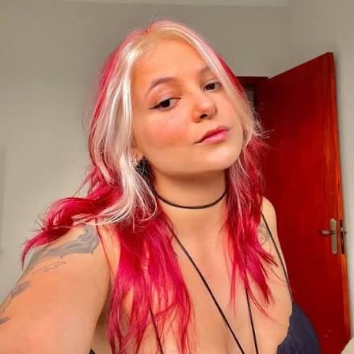

✦
Quem é a Isa?
Isa Roza é uma criadora de conteúdo brasileira que mantém uma presença ativa no YouTube e na Twitch, com vídeos e lives focados em entretenimento, reações e momentos descontraídos com a comunidade.
Conteúdo, reações, entretenimento e muita resenha. Entre nas redes da Isa e acompanhe as lives ao vivo de quinta a domingo.

Isa Roza é uma criadora de conteúdo brasileira que mantém uma presença ativa no YouTube e na Twitch, com vídeos e lives focados em entretenimento, reações e momentos descontraídos com a comunidade.
No YouTube, o canal @roza_isa reúne vídeos e reações. Nas lives, a programação pode passar por filmes, séries, desenhos, animes, memes e outros conteúdos escolhidos para a comunidade.
A Twitch é o espaço para acompanhar a Isa ao vivo, conversar no chat e participar dos momentos que viram cortes, vídeos e memórias da comunidade.
De quinta a domingo. Sujeito a alterações.
O canal @roza_isa aparece publicamente com criação em 23 de setembro de 2023.
O canal já acumulou centenas de vídeos e dezenas de milhões de visualizações, segundo serviços públicos de estatísticas.
O conteúdo público associado à Isa inclui reações a filmes, séries, desenhos e outros conteúdos de entretenimento.
A Twitch funciona como o palco ao vivo, enquanto o YouTube concentra vídeos e conteúdos para assistir depois.
As lives contam com comandos e interações no chat, reforçando a ideia de comunidade durante as transmissões.
O calendário deste site segue os horários informados: quinta e sexta, 16h–21h; sábado e domingo, 14h–20h.